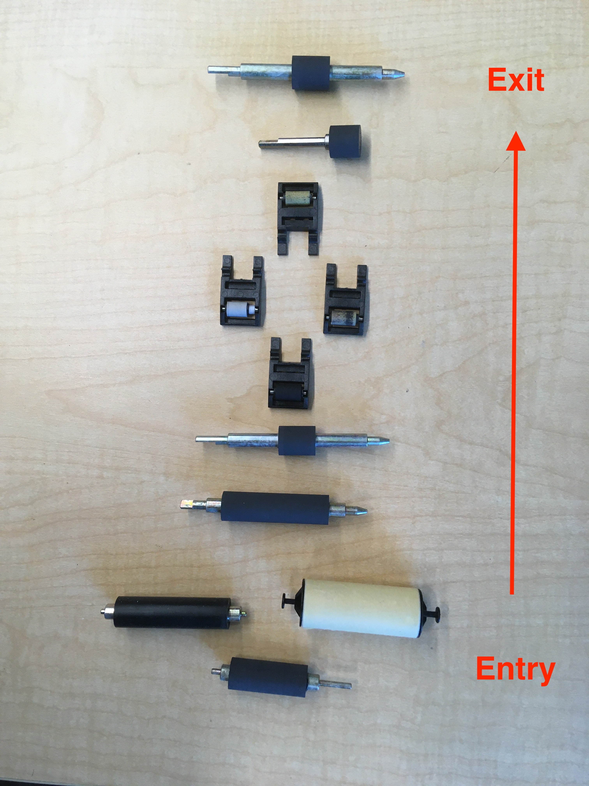
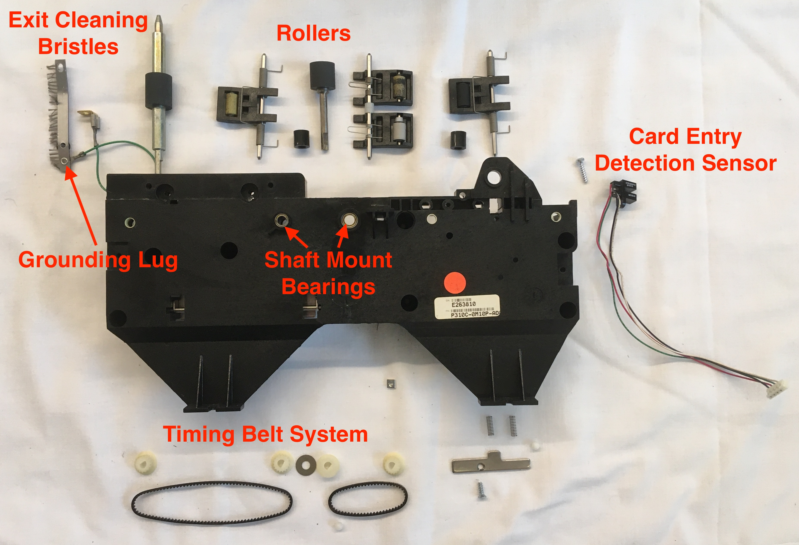
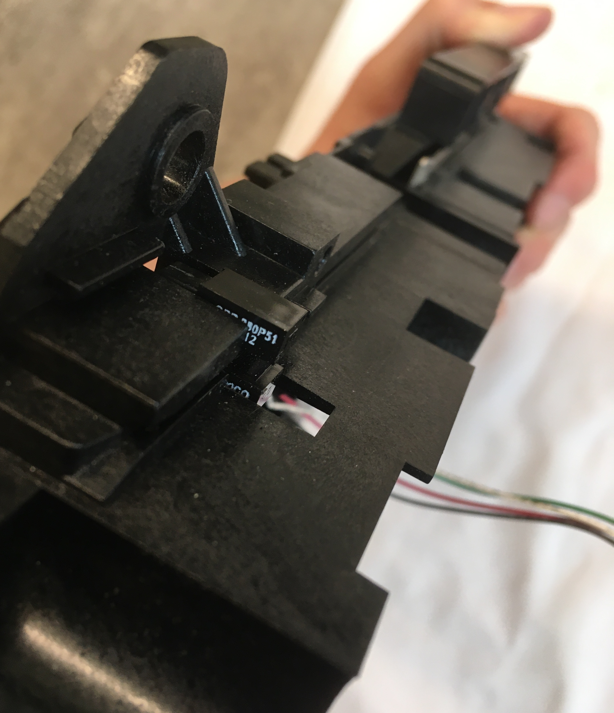

Introduction
The Eltron P310C ID card printer was yet another lucky find rejected to the junk piles of Medford. As the name suggests, the machine can be used to print identification cards for enhanced security in a variety of organizations such as schools, hospitals, and commercial businesses. Blank cards (made of PVC or a PVC based composite) are loaded into the blue card holder on the right side of the printer and a color ribbon roll is mounted on the printer interior, stretched between a pair of plastic shafts. Through a 25 pin connector and associated software driver, a computer can be interfaced with the printer to send card designs to the printer for production. Unfortunately, the printer came with neither cards, color ribbon rolls, nor connectors so I was not able to test it (for purely academic purposes of course).
The printer applies color to the initially white cards using a thermal print head through one of two methods—dye sublimation or resin thermal transfer. In dye sublimation, the print head sublimates the color ribbon into a vapor that is then deposited on the card surface. In resin thermal transfer, the print head melts the monochrome ribbon into a liquid that is then deposited on the card surface. Resin thermal transfer printing results in much more durable prints, but limits the print color to just a single option. Both printing methods can be achieved with the Eltron P310C by loading the appropriate color ribbon roll and selecting the desired setting in the driver software.

Original Printer
ID Card Entry

ID Card Exit

Printer Back

Closeup of Label on Printer Back
Examining the Eltron P310 manual, some important information can be decoded from the part number, "P310C-OM1OP", written on the label. The "C" following the printer name indicates that the printer is designed to print in color rather than being limited to monochrome. The set of characters following the hyphen indicates that the printer is not capable of programming smart cards (with embedded chips), is capable of magnetically encoding cards, must have high coercivity (HiCo) magnetic cards loaded in with magnetic stripe side facing down, has standard memory, and uses a parallel (as opposed to serial) computer interface connection. High coercivity cards are used when the cards are expected to receive high use and possess stronger magnetic fields—measured in Oersteds for this application—than low coercivity (LoCo) cards.

Printer Interior

Use Instructions Label on Interior
The images on the label communicate instructions for the following tasks from left to right: color ribbon loading, card loading, and cleaning roller replacement. Highlighting the active pieces in blue and providing warnings in yellow while leaving the rest of the instructions in black and white was a helpful tactic for emphasizing key takeaways from the instructions and made the images fairly intuitive to read.

Card Printer Ribbon Label
When printing via dye sublimation, a YMCKO color ribbon is typically loaded into the printer. YMCKO stands for five steps in the printing process: yellow, magenta, cyan, black, and overlay. The YMCKO ribbon contains repeating sections of YMCKO panels in series. The card slides under the print head to receive a coating and is then pulled back before the print head to receive the next coating. As with paper printers, the primary colors of pigment (yellow, magenta, and cyan) can be used to create all matter of colors on the card. The final coating, the overlay, adds a clear protective layer over the card to preserve its life. Each of these layers is only a few microns thick.
Status Indicator Lights
The status indicator lights located on the front cover of the printer are used to communicate basic status updates to the user. The adjacent blue panel button also allows the user to execute some basic functions such as clearing errors (indicated by the status lights), initiate the cleaning process, or initiate a test print.

Exterior View
Examining the simple one-sided PCB which holds the status indicator lights and panel button, it's clear that all the computation for these processes is directed off to a separate board to which the wires leaving the PCB are directed. Looking at the traces, it's interesting to note that the resistor only appears to be used for the green LED. Maybe the green LED has a substantially different forward voltage (voltage required to light the LED when current travels forward through the diode), than either the yellow or red LED. In addition to labelling each component, the polarity of the LEDs is labelled on the PCB to ensure proper installation where "A" stands for anode and "K" stands for cathode. I'm not sure what the purpose of the missing component labeled "CT1" would be. Possibly that component was used for a different customization of the printer and CT may have stood for "connection" or "common terminal".

PCB Back View
PCB Front View
Main Control PCB
The wires leading off from the status indicator PCB are connected to a large control PCB mounted in the back of the printer.

PCB Storage Under Printer Cover

Exploded View with Main and Power PCBs

Main PCB - Top View (Ports Labelled)

Main PCB - Top View (Components Labelled)
Coldfire MCF5206 Microprocessor (datasheet)
Trying to make sense of the over 400 page long datasheet was overwhelming and more than I was willing to slog through, but it provided some basic information of note. The microprocessor has 160 pins including a clock input, i2C compatible Motoral Bus (M-Bus) clock and data pins, two pairs of DUART transferring and receiving pins, interrupt control pins, timer in and out pins, chip select pins, and general purpose input/output (GPIO) pins. Computational information is stored on board in the form of cache and SRAM (static random access memory), and can also be stored off board in the form of DRAM (dynamic random access memory). Given all these capabilities, this part maybe would be more aptly named a microcontroller instead of a microprocessor.
ISSI IS41C16100 DRAM (datasheet)
The DRAM can contain 16 MBIT (2MB) of information with an accelerated processor cycle access method called EDO Page Mode. Memory access time is an important parameter for memory units such as this one as accessing information from memory takes much longer (more processor cycles) than running tasks on the processor.
ON Semiconductor HCT574A Octal Register (datasheet)
The full name of this component in the datasheet is actually "Octal 3-State Noninverting D Flip-Flop with LSTTL-Compatible Inputs". There's a lot to unpack in that name. "Octal" indicates that the register includes eight "D Flip-Flop" circuits. The D-type flip-flop circuit is a type of circuit using several logic circuits (i.e. AND, OR, NAND, NOR) to store or latch onto a binary value (1 or 0) even when the input changes. Each flip-flop will only take in a new value during the next clock cycle triggered by a clock pin connected to the register. "3-State" indicates that the outputs can be high (1), low (0), or a high impedance state which effectively disables the output from affecting anything downstream (i.e. disconnected from output bus). This special high impedance state is triggered on all flip-flops when the output enable pin on the register is set high. "Non-inverting" means that when data is read in, the same signal is then sent out. An inverting register would flip all of the binary input data, 1s would become 0s and 0s would becomes 1s. "LSTTL" stands for Low Power Schottky Transistor-Transitor Logic and likely some modification was required to make the register compatible with this more advanced lower power transistor-transistor logic (TTL) as compared to previous forms of TTL. TTL—which includes AND, OR, NAND, and NOR logic—forms the basic foundations for all computer operations. These conditional logic gates are each composed of a pair of transistors, hence the name "transistor-transistor logic".
Fairchild Semiconductor HC574 Octal Register (datasheet)
The full name for this component is "Octal D-Type Flip-Flop with 3-STATE Outputs". Now that we know what those words mean it's not quite as scary to seem them crop up. As a reminder, since the register contains eight flip-flop circuits, it can store "eight bits" or "one byte" of information. Although the name is slightly different, I wasn't able to perceive any functional differences between this register and the previous HCT574 register from the datasheets. Fairchild Semiconductor has since been purchased by ON Semiconductor.
ON Semiconductor HC573 Octal Transparent Latch Register(datasheet)
The full name for this component is "Octal 3-State Noninverting Transparent Latch". This name sounds fairly familiar with the exception of "transparent latch". As with the previous registers, this register latches onto values to store them. However, instead of taking in new values at the rising edge of the clock signal (as it moves from low to high) this register takes in new values whenever the latch enable pin is set to high. In effect, if the latch enable pin is held high then the latches appear transparent to the incoming data. In other words, the input will move right through the latch and change the value of the output. This register is otherwise the same in all other respects to the previous registers.
Nexperia 74HC165 PISO Shift Register (datasheet)
Like the previous registers, this register contains eight D-type flip-flop circuits. However, since this register is what's called a "shift register", each flip-flop circuit is connected to the next so that values can be fed in series down the cascade of flip-flop circuits. This shift register is a parallel in-serial out (PISO) shift register. This means that data can be fed in through parallel lines into each flip-flop circuit and then sent off all together in series on a single line. In addition to PISO, there are also SIPO, SISO, and PIPO shift registers. Despite taking in data in parallel and sending it out in parallel, the registers discussed previously would not be considered PIPO shift registers as they do not shift the data before sending it out again. These PISO shift registers are potentially used to expand the capability of the general purpose input/output (GPIO) pins on the microcontroller to accomodate a greater number of input devices. This is possible since the readings from eight input devices can be recorded in parallel but then sent all together on one line to the microcontroller in series.
Texas Instruments HCT00 Quadruple NAND Gate (datasheet)
As the name would suggest, this component contains four independent, two-input NAND gates. As a reminder, the result of this NAND logic is that a low signal is only output if both inputs are high. In all other cases, the output is high. It's worth noting that these logic conditions can be constructed in ways other than TTL. For example, they can also be built using diodes or even using a combination of diodes and transistors. I would assume that the logic components on this PCB are also constructed using TTL, but I can't say for sure.
Nexperia 74HCT32D Quadruple OR Gate (datasheet)
This component contains four independent, two-input OR gates. As a reminder, the result of this OR logic is that a low signal is only output if both inputs are low. In all other cases, the output is high.
Texas Instruments LS00 Quadruple NAND Gate (datasheet)
Like the HCT00, this component also contains four independent, two-input NAND gates.
Analog Devices AD8403 Digital Potentiometer (datasheet)
When I think of potentiometers, I typically imagine a knob connected to a component whose resistance varies as I twist the knob. However, this potentiometer is digital instead of mechanical like the knob. The variable resistance of the digital potentiometer is controlled by mapping a number code sent in binary through serial input to a resistance level. This component contains four independent, 256-position, digital potentiometers.
ST Microelectronics LM317 Adjustable Voltage Regulator (datasheet)
The adjustable voltage regulator can be used to produce output voltages between 1.2V and 37V when controlled using a variable resistor. Given the proximity of the digital potentiometers it seems possible that the digital potentiometers are used to control the output voltage of the voltage regulator. However, the proximity of other components related to driving the motors (of which there are four) in the printer would seem to indicate that the digital potentiometers (of which there are also four) are involved in driving the motors. The motors require 18V while the PCB hosting these control components is mostly running at 5V, seeming to indicate that the voltage regulator is somehow also involved in the motor operation to step-up the voltage for them. Why then is there only one voltage regulator and why isn't the step-up from 5V to 18V set with a fixed resistor attached to the voltage regulator? One potential explanation is that only one motor is controlled at a time and its speed is controlled by adjusting the voltage supplied to the motor.
Analog Devices ADM202 CMOS Driver/Receiver (datasheet)
The CMOS driver/receiver can transform a 5V input to a +/-10V output using a switching power supply type circuit. Unlike the tight surface mount appearance of many of the other ICs on this board, the through hole mounting of this component and its thicker body make it stand out along with a few other similarly shaped boards. Such a board with a rectangular body and parallel rows of pins on either side is often described as a Dual In-line Package (DIP). I'm not completely sure why, but the name DIP somehow sounds much more friendly and inviting than IC. Maybe it's because you can say it without having to spell it out.
ST Microelectronics L293B Push-Pull Four Channel Driver (datasheet)
The primary function of a driver is to control a high power (high voltage and high current) supply using low power logic signals. "Push-Pull" indicates that a push-pull amplifer circuit is included in this component to raise the output current so that the driver can output high power. The functionality of the push-pull and driver circuits are founded in transistors. For example, one transistor alone could be used as a driver by opening and closing a high power line in response to a control signal. A typical application of a driver is to drive motors—a high power application—using logic signals coming from a low power microcontroller or some such device. As there are four motors in the printer, it would seem likely that this four channel driver is used to drive the motors. The driver can drive the motors forward, backwards, or not at all.
Texas Instruments LM339 Quad Differential Comparator (datasheet)
As the name would suggest, this component contains four comparators—each of which is used to compare two input voltages. Typically, voltage comparators are used to detect a digital signal such as one being emitted by a sensor. When the voltage coming from the sensor is greater than some set reference voltage, then the comparator outputs a positive voltage. On the other hand, when the voltage coming from the sensor is less than the reference voltage, then the comparator outputs a negative voltage. And finally when the two input voltages are approximately equal, then the comparator outputs zero voltage. As there are a number of sensors in the printer, it's possible that the purpose of the comparator is indeed for sensor state detection. One final interesting note from the datasheet of this component is that it falls under a class of similar quad differential comparators with the LM339 requiring the most limited operation temperature range of 0-70 degrees Celsius. This seems like a fair choice for the designers of this product to make as the office environment in which these ID printers are used will always stay well within that temperature range.
Nexperia 74HC04D Hex Inverter (datasheet)
Of all the components mentioned so far, the hex inverter is one of the simplest. As one could easily derive from the name, this component contains six independent inverter circuits, each having an input and output. The output is simply the inversion of the input signal. Put in a high (1) and get out a low (0), and vice versa. As with many circuit components, the inverting operation is also founded in transistors. It's interesting to note how the model numbers of several of the logic ICs begins with 74. This is because these chips are all a part of the 74 logic chip series.
Fairchild Semiconductor 74VHCU04 Hex Inverter (datasheet)
As with the 74HC04D, this component also contains six inverter circuits. The board pinouts are identical, but there's likely some difference between the two hex inverters that's escaping my analysis.
Omron G5LE Power Relay (datasheet)
Like drivers, relays are also used to control the opening and closing of high power lines with low power inputs. However, in relays the low and high power lines are electrically isolated as opposed to being connected through a transistor. Therefore, relays are used when high power spikes are more likely which could damage the control circuit if the switch was not electrically isolated. Given it's large size, I would assume that this relay uses a mechanical switch to isolate the two circuits. For a mechanical relay, the low power line can be used to drive an electromagnet causing a nearby metallic lever to rotate and connect the high power circuit. There are also solid state relays which rely on a light and light sensor to electrically isolate the circuits. As this relay is a "one-pole" relay, it only commands one high power line. Given that the heater likely requires high power and the heater port is adjacent to the relay, I would assume that this relay is used to control the power supply to the heater.
I examined many of the ICs on this board in great depth, but not all of them. For many of the ICs, I either couldn't read the label or find information about the product by looking up the model number on the label. Furthermore, there were many other components besides the ICs which I haven't even mentioned. So before I conclude the discussion of the main PCB, I'd like to mention a few important components on this board. There are also several spots on the board that don't seem to be in use. These locations are possibly reserved for components used in other configurations of the printer. For example, there is a large MOSFET type spot with solder pads tinned, but empty. Additionally, a few of the ports weren't in use.
A large rectangular chip lies just below the Coldfire microcontroller with fine pitch connectors. Given these physical parameters and its proximity to the microcontroller, I would guess it's some sort of memory unit. At the bottom right corner of the board lies a long DIP with a heat sink attached on top. I'm not sure what this component does, but given how hot it must be getting maybe it's some sort of computational unit or driver for the heater. To the right of the DIP with heat sink is another voltage regulator looking component (could also be a MOSFET). If it's a voltage regulator, maybe it's used to step up the voltage for the heater. To the left of the DIP with heat sink is a large capacitor (25V 6800uF). Possibly this capacitor is used in conjunction with the heater to decouple its power draw from that of the main control board. In other words, if the heater demanded a high power draw, the capacitor would protect the control board from otherwise shutting down from the power surge. Above and below the motor driver are four diodes. Given their proximity to the motor driver, I would expect that one diode is connecting to the driving signal for each motor. Given the large inductive load of the motors, they will cause a power surge when stopped as a result of the back EMF generated by the motor coils. To prevent this power surge from damaging the transistors in the driver, the diodes provide an alternate path for the current to travel and dissipate. There are also a pair of crystal oscillators used to track time. Why there are a pair instead of just one, I cannot say.
For the components who's labels I could read and interpret, many of them used a similar labelling scheme. Typically, the model number was printed on one line and a manufacturing code printed on the line beneath it. The manufacturing code usually consisted of some letters—likely the location of a manufacturing facility—followed by some numbers—likely the date that product was manufactured. This date was often reported using a year-week scheme. For example, 0309 at the end of the microprocessor label to indicate the 9th work week of 2003.

Main PCB - Bottom View

Closeup of Large Capacitor

Closeup of Processor

Closeup of Oscillator
The label on the oscillator is easy to read and fairly informative. The oscillator has model number FOX147-20 and resonates at a frequency of 14.7456 MHz. What they don't tell you on the label but that you can find on the datasheet is that this oscillator is produced by FOX Standard Crystals and is a parallel resonator with a load capacitance of 20pF. This load capacitance is important to consider when adding an oscillator to the circuit as its interaction with other capacitances in the circuit will impact the performance of the oscillator (in ways I know not how to explain).
Side PCB - for Magnetic Encoding

Side PCB - Top View

Side PCB - Bottom View

Metal Cover for Power PCB

Power PCB

Closeup of Chokes
Closeup of Transformer and Transistor Heat Sink Plate

Closeup of Power Input

Closeup of Large Capacitor

Closeup of Paired Inductor
Entry Unit
The entry unit is used to control the thickness of cards permitted to enter the machine. Based on its relatively simple design which only obstructs cards that are too thick from passing, it seems like cards thinner than the desired setting would still be allowed to pass. Since this unit contains no sensor to communicate to the rest of the printer what thickness card is being inserted, it seems unlikely that the rest of the printer would be adjusting its process in any way to account for cards of different sizes. Instead, it's more likely the entry unit serves to reduce the likelihood of multiple cards being sent into the printer simulatenously which could generate unpredictable issues within the printer that might jam the system.
Entry Unit - Back View
Entry Unit - Side View
Entry Unit Card Width Adjustment Slots

Setting for Thinnest Card

Setting for Thickest Card

Card Entry Unit Exploded View
Rollers

Card Cleaning Rollers
Closeup of Torsion Spring Securing Lint Roller
With just the torsion spring holding the lint roller in place, it can be easily removed and replaced as it accumulates dust over the course of printer operation. It's interesting to note that in addition to the card cleaning rollers, the manual states that the printer also comes with cleaning cards. The cleaning cards are supposed to be fed through the printer when the printer indicates that cleaning is required by flashing the orange and red status indicator lights. The cleaning cards are pre-saturated with cleaning fluid to wipe clean the interior surfaces of the printer feed system including the print head, magnetic encoding station, and rollers.

Rollers Leading Up to Card Exit
Rollers Removed
Disassembling Printer Body

Metal Cover for Protecting Mechanical System and Mounting Main PCBs

Special Hex Star Screwdriver Head Required for Interior Disassembly

Full Product Exploded View
Printer Body Front Half

Exposed Timing Belt System on Printer Front

Printer Body Front Half - Front View

Printer Body Front Half - Back View
Printer Body Front Half - Front Exploded View

Printer Body Front Half - Back Exploded View
Card Entry Detection

Card Entry Detection Electronics Unit
Printer Body Back Half

Printer Mechanism

Closeup of Optical Encoder Mechanism

Printer Mechanism PCB - Top View

Printer Mechanism PCB - Bottom View

Magnetic Encoder Mounted in Body

Magnetic Encoder - Top View
Magnetic Encoder - Bottom View

Printer Mechanism Exploded View

DC Motor for Roller Rotation

Print Head

Cooling Fan for Print Head
Light Unit Adjacent to Print Head

LEDs Exposed in Light Unit

Optical Encoder Disk - Front View

Optical Encoder Disk - Back View
Optical Encoder Light Sensor

Unremovable Pieces from Printer Mechanism

Print Head PCB
Testing Print Head Unlock Lever
Conclusion
Salvaged Parts